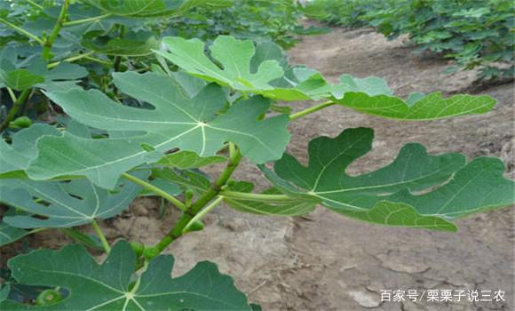
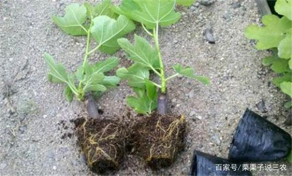

简介：无花果主要生长于一些热带和温带的地方， 目前已知有八百个品种，绝大部分都是常绿品种， 只有长于温带地方的才是落叶品种。 下面我们了解一下无花果什么品种好。
一、无花果有哪些好的品种
首先说明，一个地方的优良品种如果移植到另一个地方，则未必能产生高效益，因为一个好的无花果必须与当地的生长环境相适应。下面所列举的无花果优秀品种，只是相对而言的。
1、布兰瑞克无花果
夏秋果兼用种，夏果少，以秋果为主，夏果呈卵形，平均单果重50～60克，果皮黄褐色，果肉红褐色，树姿半开张，树体矮化，分枝弱，连续结果能力强，产量不高，耐寒，耐盐性强。
2、青皮无花果
夏秋果兼用种，以秋果为主。秋果呈倒圆椎形，单果重60～80克，成熟时为浅绿色。树势旺，树姿半开张，枝条粗壮，分枝较少，耐寒性中等，抗病力强，耐盐力较强。
3、蓬莱柿花花果
秋果专用种，夏果极少。秋果为倒圆椎形或卵圆形，果顶圆而稍平且易开裂，单果重60～70克，果皮厚紫红色，果肉鲜红色，较甜，但肉质粗，无香气。枝稀，枝长而粗壮，耐寒性好。
二、无花果的繁殖方法
1、扦插繁殖
无花果扦插于3月中、下旬选取健壮枝条斜插入土三分之二，其余部分露出土外，填上压实，浇水保持土壤湿润，约1个月左右生根，培育1年即可移栽。
2、分株繁殖
无花果于2～3月进行分株栽种，定植按行株距3×3米开穴栽种，栽种前要修剪，除去密枝或枯枝条，在树液未流动以前或展叶以前栽种为好。
3、压条繁殖
无花果的压条繁殖比较简单，和普通花草压条操作方法一样，但由于繁殖系数小，因此多在用扦插和分株繁殖困难或要繁殖较大的新株时采用。